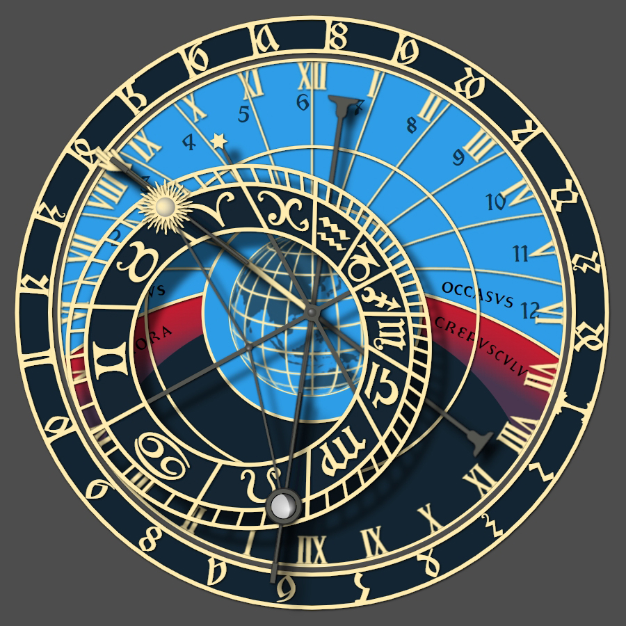

世界之窗天文钟模拟器

本模拟器介绍
本项目将天文钟模拟器的默认时区及经纬度修改为深圳市，并在历史记录中保留布拉格天文钟的时区及经纬度，方便快速切换查看。并将web界面及选项汉化为简体中文。
深圳世界之窗天文钟按布拉格天文钟的原理复刻并建造，钟面按照深圳世界之窗所在地的实际纬度重新划分，以指示正确的日出/日落时间等天文现象。
动画演示
点击 播放按钮(▶️) 或 快进按钮(⏩) 可按分钟或按天快速观看天文钟的运行。点击 停止按钮(⏹) 以结束动画演示。
您还可以点击时间、纬度、经度字段中的数字，然后点击上/下箭头键，快速查看时间和位置的变化，时钟将快速经过一系列时间或位置。
图形设计
此处使用的原始天文钟 SVG 图形和字体最初由 Jan Tošovský 开发，可以在 该网站 找到。
此处的配色方案已被更改（模拟器提供三种不同的配色方案），图形已被修改以覆盖完整的经纬度范围，并且图形现在可以在网页浏览器中快速更新，而不依赖于服务器的。可以选择在更新的配色方案中添加一个类似于原始布拉格天文钟（2018 年 10 月之前）的中央世界地图。
提供了一个高级选项，可以看到比默认显示更多的钟面真实机械细节。
模拟器与原版布拉格钟的区别
- 模拟器的指针、外环时间、太阳、月亮和黄道盘的位置默认使用您计算机的时钟和现代天文计算来确定，而不是模拟机械钟的内部齿轮。也可以选择近似模拟机械计时，其中时针被视为完美运行，黄道盘、月亮的位置、月相则从小时时间按固定比例计算得出。定期进行虚拟重新校准（就像在现实中所需的那样），以防止时钟过度不同步。波希米亚时间（钟的外环时间）则始终使用现代天文计算来维护。
- 通常情况下，这个模拟器显示的太阳位置比真实的钟表更准确，因为太阳符号可以根据需要在黄道盘上自由移动。而在真实的钟表中，太阳被限制与太阳指针对齐，这可能会产生大约正负 15 分钟的误差，此外还有本地平均太阳时与所选时区之间的差异所产生的误差。在模拟机械计时时，这种太阳位置的现实世界限制将会生效。
- 可选地显示可见行星（如水星、金星、火星、木星和土星）的位置，以及太阳和月亮位置的更准确标记。
- 在 2018 年 10 月之前，原始的钟表在钟面中心绘制有一幅世界地图，采用 立体投影法 绘制，南极朝上，以布拉格为中心。由于此模拟器可以设置为地球上的任何位置，不仅限于布拉格，因此这幅地图将旋转并以当前设置的经纬度为中心。
- 在 2018 年 10 月的翻新后，中央世界地图被移除，取而代之的是一个简单线框的地球仪。在使用 2018 年后的配色方案时，这个模拟器仍然保留了中央世界地图，但颜色和视角与钟表的新外观保持一致。此地图可以选择性地停用。
- 模拟器可以在北极圈和南极圈内运行。这导致了全天黑暗和全天光明的可能性。在这些极端纬度上，钟面上将出现一个标记为 “SOL NOCTIS”（拉丁语，意为晚间太阳）的新区域。不等时的线条可能会变得非常狭窄，甚至可能完全消失。
- 从一次日落到下一次日落之间的时间总是被分为二十四小时的 波希米亚时间（也称为意大利时间），包括在日落之间可能会经过几天甚至几个月的时间段。
- 模拟器可以在南半球运行。当纬度设置在赤道以南时，钟表的标记和指针的运动将反向，变为逆时针方向。